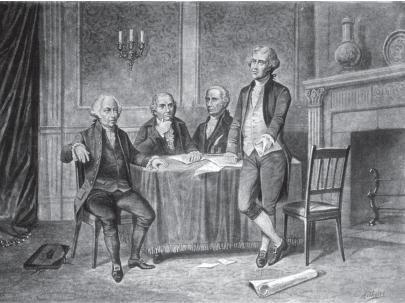
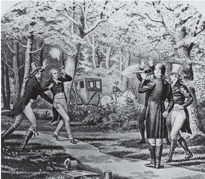
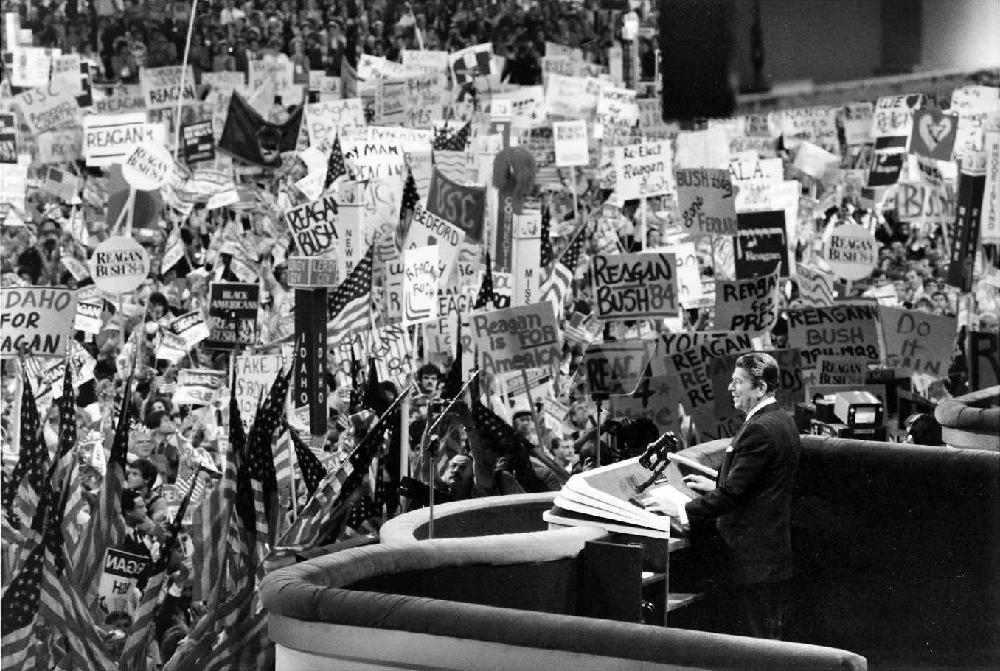
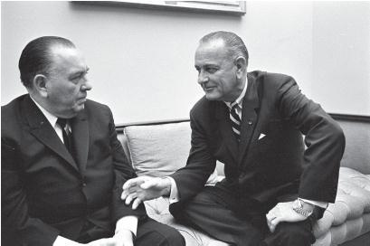
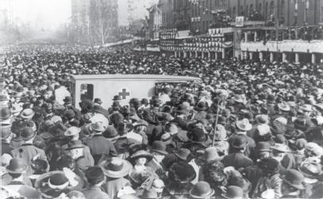

1787年，为了说服纽约民众批准新的联邦宪法，詹姆斯·麦迪逊写下了《联邦党人文集》第十篇。人们通常认为，这篇文章提出了宪法的基本纲要。麦迪逊告诫读者，派系斗争祸害无穷，“既不利于其他人的权利，也不利于长期的、整体的社区利益”。乔治·华盛顿在辞去总统职务的告别演说中，告诫民众“要以最严肃的态度来反对党派意识的祸害”。
然而，麦迪逊本人后来却敦促托马斯·杰斐逊建立组织，反对亚历山大·汉密尔顿的政策，后者是华盛顿的财政部长，据说华盛顿的告别演说就出自他手。这些开国元勋一度害怕派系斗争，反对政党，最后却变成了最早的政党领袖，这听起来多么讽刺。杰斐逊组建的民主共和党是第一个现代政党。
在这些开国元勋提出警告的时候，他们所担忧的对象还没有成形。但政党（以及两党制）很早就在美国出现，并且延续至今。在第一章，我们探讨了一些制度因素，用来解释为什么美国会存在两党制。在本章，我们将分析政党的历史成因和后续发展。

图3 约翰·亚当斯、古弗尼尔·莫里斯、亚历山大·汉密尔顿和托马斯·杰斐逊，这几位建国时期的政治领袖同时也是早期政党的缔造者
麦迪逊和杰斐逊联合起来组建政党，并不是为自己谋求权力，而是因为他们认为，汉密尔顿正引导国家走上错误的道路。汉密尔顿的经济政策对新英格兰地区的商业阶层更为有利，麦迪逊和杰斐逊认为美国是个农业国家，弗吉尼亚地区的种植园和西部边疆的农民才是美国的代表。每个阵营都认为他们是为了公众的利益。
双方展开辩论。 [2] 他们组建的政党类似于18世纪英国/爱尔兰政治哲学家埃德蒙·伯克所设想的组织（“一群人联合起来，为促进国家利益而共同奋斗”）。作为理论家，这些缔造者一度担心政党会造成国家层面的派系斗争和内部分裂。然而当这些人成为国家领袖之后，他们发现组建政党是必要的手段，只有政党才能达成同盟，从而为公众利益服务。
亚历山大·汉密尔顿认为，从经济因素和地缘政治因素考虑，新生的美国要想生存，必须有一个强有力的中央政府。作为建国初期的财政部长，他的意见深受华盛顿总统重视，尤其是在一些重大问题上，比如募集足够的资金来偿还独立战争期间的债务，以及由联邦政府来承担各州债务。约翰·亚当斯是华盛顿的副手，后来成为华盛顿的继任者，虽然他瞧不起汉密尔顿，但他赞同后者的许多看法。托马斯·杰斐逊在华盛顿政府中担任国务卿，他强烈反对汉密尔顿的计划，但出于对华盛顿的忠诚，他继续留在内阁。然而，在国会当中，汉密尔顿与杰斐逊各自的追随者派系分明，后者认同杰斐逊关于农业化和各州自治的理念。两人关于美国发展方向的理念差异最终产生不同的党派。
华盛顿、亚当斯和汉密尔顿领导的政党被称为“联邦党”，杰斐逊和麦迪逊领导的政党被称为“民主共和党”，在围绕是否接受亲英的《杰伊条约》展开的辩论过程中，两大派系之间的分歧变成了永久的决裂。作为亲法派，杰斐逊反对这个条约。他辞去内阁职位，回到弗吉尼亚州的老家蒙蒂塞洛。但不久之后他就复出了。
1796年，华盛顿宣布不会寻求第三任期。时任副总统约翰·亚当斯想要成为继任者，他打算在汉密尔顿不留任的情况下，继续推行后者的计划。国会中汉密尔顿的反对者向选民发出公开信，为杰斐逊造势。最终亚当斯惊险战胜杰斐逊，两人获得的选举人票仅差三票。杰斐逊承认失败，并同意按当时的选举规则担任副总统。在建国过程中，这是重要的一步，因为杰斐逊认可选举体系的合法性。当时的政党体系以政策为核心，在国家层面进行组建，并逐渐扩散到全国各地。 [3]
亚当斯执政有失民心。1800年，杰斐逊再度成为他的对手。此时，政党体系已趋于成熟，所有支持杰斐逊的选举人同时也投票支持他的竞选搭档阿龙·伯尔，两人打成平手，都比亚当斯高出八票。当时的宪法规定，在没有候选人获得过半数选举人票的情况下，由众议院从排名前三的候选人中选出总统，当时众议院被联邦党人掌控。整个国家陷入一场危机，有谣言称对手进行秘密交易，试图阻止杰斐逊当选。最终在35轮不分胜负的投票后，杰斐逊还是赢得了选举。因为获胜者最终当选，这样的选举流程也作为合法形式保留下来。 [4]
建国初期发生的这些事件对于国家建设产生了重大影响，政党在其中发挥了主要作用，虽然政党的缔造者在执政之前曾贬低党派。首先，一位深受民众爱戴的总统在1796年自愿放弃权力，原本只要他自己愿意，完全可以继续连任。其次，在选举继任者的竞选中，一位反对总统的政策并且惜败于对手的候选人同意担任副总统，因为那是当时宪法的规定。第三，政党体系开始形成，国家领袖通过政党将他们的政策分歧摆在选民面前，由后者来投票决定。当然，当时有资格成为选民的人并不多——仅限于白人男性，并且许多州还规定，选民必须拥有产业。第四，1800年，现任总统在选举中失利，虽然他可以通过操纵众议院来继续留任，但他最终没有这样做，而是承认选举结果。亚当斯自愿将总统权力交给杰斐逊，这一事件确认了这个新生国度的政治体系的有效性。在这一体系中，政党扮演着前所未有的重要角色。

图4 阿龙·伯尔与亚历山大·汉密尔顿之间激烈的政治斗争最终以一场决斗结束，时间是1804年7月11日，地点是新泽西州的威霍肯
1800年大选结束后不久，联邦党势力大减，沦为新英格兰地区的区域性政党。他们的政策过于保守，在全国范围内缺乏吸引力，同时他们的领袖也不愿意为了寻求支持而妥协。他们一直都是亲英派，当国会于1812年对英国宣战时，他们曾站出来反对。到1820年，民主共和党的统治地位已经无可撼动。 [5]
随着联邦党的消失，美国政党的第一个发展阶段也宣告结束。一个大型政党走向消亡，如今的美国人可能会对此感到吃惊，但别忘了，那时候的政党很脆弱，还不成熟。民众还没来得及对政党产生忠诚——他们支持的对象是领袖。当时的政治精英并非在所有问题上都有分歧。杰斐逊在他的第一次就职演说中强调，“观点差异不等于原则差异……我们都是民主共和党，我们都是联邦党”。当时的议员更关心地区利益，而不是政党。在担任总统期间，杰斐逊时常精心安排宴会来笼络议员，希望他们支持自己的观点。在缺乏民众支持的情况下，联邦党领袖没能做出调整，他们内部缺少组织机构来支撑整个党。领袖退出政坛，回到自己的家中，联邦党就此消失。
我们可以从不同的分析框架来观察现代政党在过去两百年时间里的发展。每一种框架都有助于我们理解政党如今在美国政治中所扮演的角色。
在建国初期，联邦党与民主共和党之间的意识形态及政策分歧体现出两党的性质差异。在联邦党势力大减、不可能赢得全国选举的情况下，两党之间的分歧也随之消除。在联邦党衰落后的“美好时代”里，竞选就在民主共和党内部展开。
1824年，参加总统竞选的四位候选人都来自民主共和党，他们是：约翰·昆西·亚当斯、亨利·克莱、威廉·J.克劳福德和安德鲁·杰克逊。民主共和党并没有从中选出一人进行提名。限于篇幅，在此无法详尽描述那次选举中发生的复杂而又迷人的故事。只需要说一点：在选举中，安德鲁·杰克逊得到的民众选票和选举人票都名列首位，但他的选举人票没有过半数，因此最终决定权到了众议院手中。 [6] 当时担任议长的亨利·克莱获得的选举人票排名第四，遭到淘汰，他转而支持约翰·昆西·亚当斯，后者当选为美国第六任总统，并任命克莱为国务卿。这一举动招致杰克逊阵营的批评，认为这是腐败交易。
在这一时期，政党归属和忠诚度都不稳定。1828年，杰克逊作为民主共和党成员参选，挑战总统亚当斯，后者当时代表国民共和党（National Republican）参选。这一年选举中，杰克逊轻松击败亚当斯。这次选举，比的完全是个人魅力，而不是政策。杰克逊获胜后，他的政党（很快就更名为“民主党”）分享了胜利成果，把可以直接任命的政府职位全部据为己有，赶走了亚当斯的支持者。
然而，就在这种依赖个人魅力和物质回报的政治模式背后，以“密苏里妥协”为代表的棘手的奴隶制问题，开始浮出水面。这一时期党派政治的核心问题是政治精英如何处理奴隶制。从1836到1852年，辉格党取代国民共和党，成为民主党的主要对手，但两党在奴隶制问题上都含糊其词。第三党（先是自由党，随后是自由国土党）正面回应了当时最重要的问题，从而成为两党之外的替代方案。1854年，共和党成立，作为民主党的主要竞争对手，他们迫使后者直面奴隶制问题。到1856年，辉格党近乎消失，前总统米勒德·菲尔莫尔作为领袖只得到八张选举人票，最终输给了民主党候选人詹姆斯·布坎南和首位共和党候选人詹姆斯·弗里蒙特。1860年，亚伯拉罕·林肯作为共和党候选人赢得选举，他的对手民主党内部南北两大阵营出现分裂。
从那时起，民主党和共和党作为两大政党主宰了美国的选举政治。没有哪个其他政党的候选人能够在总统选举中获胜；没有哪个其他政党的支持者能够在国会中获得多数席位。但这并不意味着，党派政治在过去150年的时间里一成不变。导致两党产生意见分歧的问题不断变化，两党在选举中结盟的对象也随之发生变化。
内战结束后，由于南方民众对于林肯所属的政党（共和党）心怀不满，民主党势力得以深入南方各州。在数十年时间里，尤其是在1876年南方重建宣告结束之后，全国性选举呈现激烈竞争的局面。当时正值工业化的快速发展期，有不少工业领袖在两党中占据主导地位。在他们支持的候选人中，有许多人是内战时期的将领，他们希望这些候选人能在将来支持自己的经济发展规划。与此同时，大批新移民来到美国的沿海地区，支持在他们定居的城市中掌握权力的政党，因为该党与当地实业家有着密切联系，能够保证他们的工作和安全。随着美国逐渐成为工业大国，政策辩论重新回归权力政治。
一系列看似无关的事件阻碍了共和党在这一时期取得彻底的统治地位。首先，丑闻和经济萧条动摇了尤利西斯·S.格兰特（1869至1877年期间担任总统）政府的地位，也使共和党受到的支持减少，同时帮助民主党候选人在1876年和1880年的选举中赢得支持。1884年农业产量减少以及1890年代初的经济萧条帮助民主党候选人格罗弗·克利夫兰在1884年和1892年两次当选总统。1880年代中西部地区农民的不满情绪，以及后来南方地区和西部地区农民的不满情绪，都被民主党加以利用。另外，作为第三党的平民党打着农业美国的旗号，他们扮演的角色与半个世纪前的废奴主义者颇为相似。
1896年总统选举成为分水岭。由于1893年出现经济萧条（当时正值克利夫兰的第二任期），民主党在1894年的中期选举中损失惨重。个人魅力出众的民主党领袖威廉·詹宁斯·布赖恩批评大企业，他支持农业美国的说法，要求降低贷款难度，并采取银本位制。没人能否认布赖恩的口才，但他选择的盟友决定了民主党的失利。
威廉·詹宁斯·布赖恩的“黄金十字架”演说
1896年7月，民主党全国大会
1896年总统选举重新调整了选民群体。 [7] 共和党成为代表城市、工人和实业家的政党；民主党在南方和边疆各州占据优势，但依旧是少数党。随后的九次选举中，共和党只输了两次：1912年，共和党候选人输给了伍德罗·威尔逊，因为作为第三党候选人参选的前总统西奥多·罗斯福造成共和党内部分裂；1916年，威尔逊惊险赢得连任。当时共和党还控制了国会，模式与总统选举一样，因为在那个时候很少有选民会同时投票支持不同的政党。
在20世纪头二十多年时间里，选举同盟保持稳定，但1929年出现的大萧条以及两党的应对措施改变了原有的同盟关系。与之前一样，政党名称没有发生变化，依然是民主党和共和党，但之前的共和党人现在变成了民主党的热心支持者，之前积极支持民主党的人现在变成了共和党人。共和党人赫伯特·胡佛在大萧条开始时当选总统，他认为应该保持现有政策不变。他在1932年的民主党竞争对手、纽约州长富兰克林·德拉诺·罗斯福在竞选时提出改革方案，并在就任总统后选择了新的道路。
罗斯福的顾问信奉凯恩斯主义，强调政府干预经济并采用预算赤字的办法来刺激经济增长——这就是美国的新政。政府在危急关头成为雇主，为那些缺乏生活保障的人提供支持，给那些需要帮助的人带来关怀。经济学家可以争论，究竟是不是罗斯福的政策让美国摆脱了大萧条，究竟这些领袖在二战之前施行的经济刺激有没有那样的效果。但没有人能够否认，公众对于罗斯福新政的认可度改变了随后几十年的选举政治。
民主党保持了他们在南方各州的统治地位，很大程度上这是出于内战遗留的文化因素。但罗斯福的新政同盟增加了工会成员、小农场主、少数族裔、穷人以及其他为平等权利而奋斗的人群。共和党变成了代表大企业和富人阶层利益的政党。罗斯福率领美国加入二战，他作为领袖在战争期间深受民众爱戴。罗斯福打破了华盛顿留下的美国总统任期不超过两届的惯例，在1940年赢得第三任期，并且在1944年赢得第四次。1945年4月，罗斯福在办公室去世。 [8] 在他的总统任期内，民主党控制了国会，并且一直持续到20世纪最后十年，其间只有一次例外。
1960年代，新政同盟依旧支配着美国政坛。这种状况并没有因为某次灾难性事件突然遭到破坏，而是渐渐出现裂痕，因为选民群体要面对不同的重大问题，并且民众已经忘记了导致他们或他们的父辈对某个政党产生忠诚的事件。1960年代，共和党总统候选人巴里·戈德华特第一次闯入民主党在南方的领地。理查德·尼克松采取的南方竞选策略，意在吸引那些只是因为传统（而不是政策偏好）选择民主党的选民。从那时起，南方各州越来越倾向于共和党，不仅是总统选举，各州选举和地方选举也是如此。
越南战争同样动摇了传统的政党忠诚。反战群体中有许多人来自民主党。许多传统的蓝领阶层的民主党支持者认为，在本国军队受到伤害的时候，反对战争是一种不爱国的行为。为表示抗议，他们转而支持共和党。其他人离开民主党是因为他们认为，民主党采取孤立主义的立场，不愿意勇敢面对世界其他地区。
在国内问题上，民主党被认为采取极端立场。1972年总统竞选期间，民主党被称为鼓吹“大赦［逃避兵役的人］、迷幻药和堕胎”的政党。那些在社会问题方面更为保守的民主党支持者，他们的忠诚度受到考验。在罗纳德·里根担任总统期间，传统的政党支持进一步受到挑战。里根是个很有魅力的领袖，并且有一套表述清晰的执政理念。他倾向于加强国防，降低税收，削减福利项目，支持传统的社会价值观。一些立场保守但传统上属于民主党的工会领袖转而支持里根。支持里根的民主党人，那些传统上支持民主党但在1980年代选举中把选票投给里根和共和党的人，是里根获胜同盟中的重要组成部分。

图5 1984年8月23日，罗纳德·里根在得克萨斯州达拉斯市举行的共和党全国大会上接受总统提名。在描述共和党和民主党的差异时，他说：“今年要做的是……在两种截然不同的治理方式中进行选择——是选择他们那种充满悲观、恐惧和限制的治理方式，还是选择我们这样充满希望、自信和增长的方式”
20世纪末，持保守立场的基督教徒作为一种政治力量的兴起，使原有的对政治同盟的分析更为复杂。许多保守的基督教徒出于经济原因原本应该选择民主党，但他们最后把选票投给了共和党。党派政治变得越来越尖锐，因为很难就各种紧迫的全国性问题达成妥协。2000年大选中，布什与戈尔接近平手，并且两党在国会中也持平，但这样的政党平衡并不稳固。在一些问题上，两党的分歧很明显。但是更多的政策问题似乎叠合在一起。选民的态度因为社会问题产生一种分歧，因为经济问题产生另一种分歧，或许又会因为国际问题产生第三种分歧。民众最终支持哪个政党取决于什么问题对他们来说更重要，或者什么问题的表述方式能够吸引更多的选民。一些政治人物注意到这一点，于是在争议性问题上采取极端立场，这进一步加剧了全国民众的意见分歧。
就此而言，美国历史上有些时候政党间的分歧能够清楚地反映出民众对于某项政策的意见分歧，但另一些时候这两者之间的关联没那么清楚。随着联邦政府在更多领域介入民众的生活，随着民众的生活变得更加复杂，并且美国民众进一步融入全球性群体，要想从政党分歧看出微妙的、存在内部冲突的民众态度，变得更加困难。
建国初期，美国政党是政治领袖在国内寻求支持的工具。但政党随后演变成为一种制度，并且在选举流程中扮演着重要角色。我们无法想象如果没有政党，美国政治会是什么样子。因此，政党发展史的另一个部分就是制度发展史。
政党作为正式制度的发展始于杰克逊执政时期（1829—1837）的民主化改革。杰克逊式民主的核心是民众在选举流程中的参与度。之前约翰·昆西·亚当斯在民众投票中落败却最终当选总统，这样的教训促使政党进行改革。在1832年之前，都是通过在国会内部召开推举会议的办法来提名候选人，这种会议也被嘲讽为“君主会议”。现在各党都不再使用这种办法，而是召开全国大会，由来自全国各地的代表投票选出总统候选人。到1930年代，通行的做法是由各州经过普选（而不是在州议会内部投票）产生选举人。为了让身处华盛顿的国会代表与他们的选民保持联系，各州改为采取以选区为单位的办法来选出众议员，这一做法被写入1840年颁布的《人口普查法》，成为正式法律。在建国初期，州长往往由州议会选举产生，后来同样改为普选，并且民众还有权选举许多州级官员和地方官员。
因此，政党开始发展地方机构，他们的任务是组织投票，支持候选人，并且发动民众参加投票。到1840年代，两个主要政党都已建立复杂的、权力分散的组织形式。1848年，民主党成立全国委员会（不到十年，共和党也照搬这一模式）；不过，全国委员会显然没有州委员会和地方委员会那么强势。到19世纪中期，两党都有了从地方层面到全国层面的各级组织，并一直延续至今。
随着选举权范围扩大，更多民众有了投票的权力，政党也开始采取竞选手段来接触选民。有些退伍的老将在参加总统竞选时用朗朗上口的名号来宣扬自己的战绩。杰克逊本人是1812年战争中新奥尔良之战的英雄人物，他被称为“老核桃”；威廉·亨利·哈里森是蒂珀卡努之战的胜利者，击败了一群印第安人，因此他和他的竞选搭档约翰·泰勒被称为“蒂珀卡努和泰勒”；1848年当选总统的扎卡里·泰勒被称为“老硬汉”。
政治人物还学会使用煽动性的修辞言语来打动选民；政党组织火炬游行，点燃了支持者的热情。发动民众意味着让大家都到投票点参加选举活动，那时候和现在一样，选民的态度不会因为辩论而动摇。到了19世纪中期，分肥制（spoils system）和激动人心的竞选已经是政治活动的一部分。所谓分肥制指的是，在竞选中获胜的候选人将为自己的支持者提供工作机会。
19世纪的后半叶被称为“政党的镀金时代”。政党间的竞争极为激烈。于是，各党都花费重金，加强组织，发动自己的支持者参加投票，尤其是在边缘选区。这些支持者必须经过训练、组织，态度积极。
就是在这一时期，各党开始形成核心团体（party machines），也就是结构分明的等级关系。占据主导地位的是一些政坛大佬，他们手下有一群工作人员，负责各个等级，一直到最基层的选区。政党采取物质激励的手段确保工作人员和选民的忠诚度，如果选举获胜，这些奖励就会分发下去；如果选举失败，奖励就会取消。工作人员通常能得到丰厚的回报，所以他们会为核心团体努力工作以保住职位。他们的一项重要任务就是招募新的支持者，通常会选择新移民为对象。执政党为新移民提供各种援助——工作、住宿、感恩节和圣诞节的特别礼物、帮助他们融入当地社区（对于新移民来说，或许这一点最为重要）。作为回报，政党得到选票，还有忠诚。
19世纪末，控制城市地区的政党核心团体在乎的是物质回报，而不是政策立场。他们的任务是赢得选举；他们招募候选人参加地方职位竞选，但在乎的是那些官员能够提供的工作岗位，而不是对方通过的政策。当时地方政府或县政府控制着大多数可以作为物质回报的工作机会。
在州级层面，政党核心团体（特别是共和党）采取另一种运作方式。这种方式的激励因素来自商界人士提供的金钱，而不是工作机会和针对新移民的援助。各州核心团体通常由联邦参议员领导，因为当时联邦参议员由州议会选举产生。商界人士支持政坛大佬，后者经州议会选举，当选参议员并前往华盛顿，他将在那里设法保护那些为他的团体提供资金支持的商界人士的利益。虽然核心团体的运作动力有所不同，但本质是一样的，都是通过物质激励换取忠诚。
政党控制的一个重要机制是对提名过程的控制。政党大佬们决定谁能得到提名。随后，他们印制并分发选票，从而控制着被提名者的命运。政党的运作机制，普通民众既看不见也控制不了。
到世纪之交的时候，政党核心团体的发展达到巅峰。20世纪初，美国开始对选举流程进行改革，这些核心团体逐渐走向衰落。直接预选的出现和普及把提名权从政党领袖手中抢了过来。1913年通过的宪法第十七修正案规定，联邦参议员由直接选举产生，这又从核心团体手中夺走了一项残余的权力。作为应对大萧条的新政的一部分，美国政府采取的福利制度改革意味着由联邦政府（而不是政党）向有需求的民众提供援助——相应地，民众的忠诚对象也开始转移。20世纪中期以后，在一些城市地区依然可以见到残留的政党核心团体。位于芝加哥市、由市长理查德·戴利领导的库克县核心团体就是一个典型例子，但这些残留的政党组织已经不是通行惯例，只是例外。

图6 林登·约翰逊总统向多年来一直掌控芝加哥的政坛大佬、市长理查德·戴利表达敬意
但政党并没有就此消亡。如果说政党作为选举组织的功能正在弱化，在组织政府和吸引民众支持方面，政党依然保持强势。 [9] 20世纪初，两党开始在国会两院选出形式上的领袖，不管本党是多数党还是少数党。两党要求立法机构内的本党成员与领袖保持一致。执政党要求本党成员支持总统的立法举措。新当选的总统通常都会挑选本党成员出任内阁职务或担任非正式顾问。
选民支持某个政党的原因不再是物质激励，但他们的忠诚度保持不变。在新政期间，政党分歧尤为严重。在民主党看来，罗斯福总统是救星；但在共和党看来，他就是恶魔。选民支持某个政党，首先是出于忠诚，而不是因为政策或候选人，只有某些具有个人魅力的领导人（比如1952年竞选总统的德怀特·D.艾森豪威尔）才是例外。政党组织依然存在，但早就不像从前那么强势。 [10]
借用马克·吐温的话来说，关于政党消亡的谣言总是被过分夸大。不仅两党制没有消失，而且民主党和共和党依然处于主导地位。18世纪初，随着联邦党的消亡，有一段时间美国不存在两党竞争，但这种局面没有在20世纪中期复现，因为每个政党如今都是作为组织存在，而组织总是能进行调整，维持自己的生存。他们不会收拾行李，灰溜溜离开。
政党的自我调整是为了应对新的形势：他们过去使用的竞选手段已经失效；选民的忠诚对象不再是政党；选民在投票时同时支持两党，一些职位投票给民主党，另一些职位投票给共和党，这种做法已经变成常规；候选人依靠自己的力量发起竞选活动，而不是与党内其他成员结成同盟。简而言之，政党接受新的角色（通过候选人来实现），从而适应新的形势。新的竞选手段——首先是广播，之后是电视，再之后是更为复杂的技术，使用计算机进行民意调查和接触选民——这些都需要资金。政党接受新的角色，为候选人募集资金。在国家层面，政党通过全国委员会和负责国会两院竞选的四个专项委员会来募集资金，这些委员会又被称为“国会山”委员会（包括民主党众议院竞选委员会、民主党参议院竞选委员会、共和党全国众议院委员会、共和党全国参议院委员会）。他们把资金从全国性组织下拨到州级组织，并且为资金有限的候选人提供各项服务（比如民意调查和研究竞争对手）。他们起到中间人的作用，方便本党候选人与可能提供支持的利益集团的代表进行接触。政党实质上变成了服务性组织，为候选人参加竞选提供支持，他们以这样的角色在全国性竞选活动中发挥重要作用。
政治史学家乔尔·西尔比根据政党在美国社会扮演的角色，把美国政党的历史分为四个时期。他把建国初期到杰克逊执政的这段时间称为“前政党时期”。从杰克逊到镀金时代的这段时间称为“政党时期”。政党影响力衰落的这段时间称为“后政党时期”。我们当前所处的时期称为“非政党时期”。就政党对美国社会的重要性而言，这样的划分或许有一定道理，但政党（特别是作为竞选组织单位和政府组织方式）如今依然充满活力。他们不再扮演从前的角色，但他们已经自我调整并找到新的角色。如果不弄清楚政党的新角色，就不可能理解现代美国选举。
到目前为止，我们已经讨论了美国政党如何反映出选民内部的政策分歧，以及政党作为一种政治制度如何发展与调整。但制度总是存在于更大的政治体系之中，政策也是在这个体系中制定的。因此，政治体系的变动必然导致制度运作机制和政策背景发生变化。接下来，我们将简要探讨三个出现重大变化的领域：选民、竞争的职位及规则、竞选手段。我们将分析这三个领域的变化对于政党和选举流程的影响。
建国初期，美国大多数州规定，只有拥有产业的白人男性才享有投票权。现在选举权已经普及，人们关心的是如何提高投票率，如何说服那些有资格投票的人行使手中的选举权。选民范围的逐步扩大经历了四个阶段。
第一步是去除关于财产的限制条件，具体操作由各州分别进行，通常都改为要求选民必须纳税。新的规定以人头税的形式（在民众投票时征收）延续多年，直到最后废除。根据1964年正式生效的宪法第二十四修正案，联邦官员选举不再征税；之后，根据1966年最高法院在“哈珀诉弗吉尼亚州选举委员会案”中做出的判决，所有选举都不再征税。
此后，选举权范围继续扩大，经过一个多世纪的漫长斗争，黑人终于获得投票权。内战结束后，根据1870年正式生效的宪法第五修正案，所有公民无论何种“种族、肤色或之前是否奴隶出身”，都享有投票权。但是，此前蓄奴州的州议会采用狡猾的办法，把刚获得解放并享有投票权的奴隶排除在外。他们实施一系列所谓的“种族歧视法”，包括识字能力测试、宪法阐释测试、“仅限白人”的初选（规定政党作为私人协会只允许白人加入）、居住地限制和人头税。南方各州的社区经常把投票箱摆放在远离黑人聚居区的地方，并且只在有限的时点内开放投票。除了这些法律限制，他们还加上非法手段——恐吓与暴力。结果就是，1960年的选举中，在亚拉巴马州、密西西比州和南卡罗来纳州，只有不到15%的非裔美国人登记投票。那一年，整个南方地区的非裔美国人中，只有大约30%的人登记投票。1965年颁布的《选举权法》就是为了消除上述做法造成的政治权利不平等。《选举权法》规定，一旦确认某个县登记投票的少数族裔民众数量不到该族裔总人口的50%，就构成种族歧视的证据，联邦户籍员将更换地方官员，以确保少数族裔在投票时得到公平对待。《选举权法》是1960年代民权运动最重要的成果之一。到这个十年末期，整个南方地区登记投票的非裔美国人比例翻了一倍，在之前登记率最低的几个州，这一数字甚至增长了四倍多。虽然非裔美国人的投票率依然低于全国平均水平，但最大的法律障碍已经清除。
第三阶段，女性获得投票权。1848年，塞内卡福尔斯市举行的妇女大会发布《感伤宣言》，要求获得平等权利。1920年，宪法第十九修正案（又称“女性投票权修正案”）正式生效，女性从此得到投票权。在此期间，女权主义者发起史诗般的战斗，这段历史值得大书特书。这些女权主义者不仅在每个州发起宣传，而且在全国性场合进行抗争。她们希望获得同等的权力，不仅是针对当权者，而且也针对她们的丈夫。她们的成功让我们看到其领袖的实力和技巧，看到她们的坚忍不拔，看到坚持原则的人战胜手握权力的人。

图7 1913年3月3日，一群女权主义者游行穿过华盛顿的街道。女性如果获得选举权，选民总人数很可能会翻倍
选举权在上述三个阶段的逐步扩大对于美国的选举流程产生了显著影响。建国初期，只有三十分之一的人有权投票。政治是社会精英的游戏，普通人的观点不必在意。把选举权扩大到所有纳税人从根本上改变了这场游戏。随着游戏者的变化，那些想要赢得选举的人就必须采取新的策略；否则就会像联邦党那样消亡。
把选举权授予非裔美国人，这最初是为了表明一种原则，但到了1960年代，理论上的投票权转化为真正的权利。特别是南方各州，过去选举产生的政治人物完全无视当地大部分民众的观点和需求，因为这些人知道非裔美国人不会参加投票。但现在，这些观点和需求变得重要了。
19世纪末，美国各州陆续认可女性的选举权。到了1920年，全国范围内的女性普遍享有选举权，结果符合投票资格的选民人数翻了一倍。那些当权者——政党领袖、工会领袖、酿酒业、天主教会、商界领袖——都反对将选举权赋予女性，因为他们担心自己的权力赖以存在的政策可能在一夜之间被推翻。这样的担忧并没有变成现实，但政治活动的性质发生了变化，各党开始推行新的执政纲领来吸引女性选民，并且调整相应的竞选手段和策略。在20世纪的不同时期，女性为了切身利益聚集在一起。有些时候，她们的投票模式完全不同于男性。但情况逐渐发生变化，最终女性的投票模式和男性已没有重大差异。
在选举权扩大的第四阶段，同时也是最后一个阶段，投票年龄限制从大多数州规定的21岁下降到18岁。艾森豪威尔总统在二战期间作为欧洲战场联合远征军的最高统帅，把成千上万名年轻人征召入伍。他很清楚，18岁至21岁的年轻人必须服兵役却没有选举权，这样的法律规定显然自相矛盾。因此，他在1955年的国情咨文演说中，要求国会把选举权年龄限制降低到18岁，并且坚持要求阿拉斯加州和夏威夷州降低选举权的年龄限制才能加入美利坚合众国。
但艾森豪威尔的要求没有得到批准，直到越战期间的1971年，这个问题才变得白热化，最终由宪法第二十六修正案把选举权年龄限制降低到18岁。有些人担心刚获得选举权的年轻人在投票时会表现出自由主义偏好，另一些人则希望见到这一点，但这样的结果最终没有出现。年轻人的投票率远低于其他选民，并且在种族、社会、经济背景相似的情况下，年轻人和年长者的投票模式并没有重大差异。
如果说，选举权范围的扩大导致参加选举的人群发生变化，那么竞选职位的变化则改变了选举活动的目标本身。我们再次注意到一种进步，变化的结果对于选举流程本身影响明显。
进步首先体现在放在民众面前的选举职位数量的增加。无须详细描述发展过程，我们就可以看到这一点。建国初期，总统、联邦参议员和大多数州长都是在民众没有参与或只有少数人参与的情况下选举产生。总统由选举人团间接选出，州长通常由州议会选举产生，联邦参议员由州议会选举产生，许多地方官员都是直接任命。
这一切现在都有了变化。总统依旧由选举人团投票选出，但现在每个州的选举人都是经过普选产生，并且有不少人希望彻底取消选举人团。各州州长都是经过普选产生。自从1913年宪法第十七修正案正式生效后，联邦参议员都是经过普选产生。现在许多州的法官也是经选举产生。经选举产生的地方官员数量超过其他任何民主国家。经选举产生的官员数量在增加，但这些官员可以直接任命的职位数量急剧减少。
于是，现在的选举政治较少采用职位分肥的手段，而是采取其他方式来吸引选民。总统和州级官员塑造出一种能吸引选民的公共形象。这一做法最早可以追溯到19世纪中期，当时政党提名那些选民耳熟能详的战争英雄作为候选人。到了电视和大众传媒时代，这一趋势更为明显。在当今时代，如果有人长成林肯的模样，还能当选总统？其他官员鉴于自身职位不够吸引人，就采取其他手段来接触选民。国会议员和州议员花费大量时间，带着他们的团队为选民提供服务，了解民众和社区的需求，因为后者与他们的工作密切相关。这些变化对于选举流程有着非常明显的影响。
2004年，霍华德·迪安在民主党候选人提名竞选中失利，但他的竞选方式表明，当代选举已经出现第三种系统性变化：竞选活动的技术变化。迪安依赖互联网来接触选民，组织竞选活动，并募集资金。他用全新的方式来使用技术，但某种程度上，他的竞选活动仅仅是政治活动中使用技术革新的一系列变化中最新的一次尝试。
一百年前，政治人物通过单独交流来接触选民。个人接触是唯一的方式，不管是使用邮件，还是当面交流。当时政治人物不使用广播，不管是进行沟通，还是用作竞选活动，直到富兰克林·德拉诺·罗斯福担任总统期间才发生变化。
从那时起，我们见证了竞选活动中的三次技术革命。首先，候选人现在采取不同的方式与选民进行沟通。电视已经取代广播，成为候选人与潜在的选民进行沟通的首要方式。另外，电视的大众传播模式还由“针对性传播”进行了补充，所谓“针对性”指的是，在有线电视上购买广告，吸引特定的人群，并且专门设计相应的主题。互联网——通过网站和电子邮件——进一步完善了候选人募集资金以及与选民进行沟通的方式。
其次，候选人通过更为复杂的方式来搜集选民信息。计算机技术给民意调查带来革命性的变革。以前只有全国范围内的竞选活动或者最昂贵的州级竞选活动能够负担民意调查的成本，通常在竞选开始时进行一次基准调查，随后补充一到两次后续调查，这被认为是通行做法。现在不仅是全国性竞选，甚至在州级竞选活动期间，民意调查都一直在进行。调查者采取滚动样本，每天或者每次重大事件发生后都对民意做出预测。在许多地方选举中，民意调查也很常见。以前负责民意调查的人只管完成自己的工作，向竞选活动的策划者提供信息，然后就靠边站。现在他们已经变成竞选活动的策划者，与媒体顾问、直邮顾问、负责资金募集的工作人员以及竞选活动的核心圈子保持密切合作（往往在同一家公司工作）。他们收集的信息更为复杂、更为及时，并且对于确定竞选主题起到更为关键的作用。
最后，竞选活动收集和分析的数据越来越复杂。有了速度更快、成本更低的计算机技术，竞选活动可以通过更为复杂的方式来收集、存储并分析数据，涵盖支持者、志愿者、捐赠者、重大问题、对手等各个方面。募集资金的方式也出现了巨大变化，因为现在的竞选活动能够精确瞄准目标人群。竞选活动可以采用更为复杂的组织方式，许多沟通活动都在互联网上即时进行。候选人的演说和辩论前的准备可以调整得更适合听众，可以更精确地引用政府项目，可以更迅速地反驳对手的观点，这一切都得益于计算机进行的数据分析。
虽然有了这些变化，政治依然算不上科学。让我们来回顾2004年霍华德·迪安的总统预选。迪安曾任小州佛蒙特州的州长，他对于互联网的利用远胜于之前的候选人。他采取四年前共和党候选人约翰·麦凯恩用过的手段，利用互联网募集到巨额资金。当时其他候选人都没有意识到互联网的巨大威力，直到迪安的竞选活动证明了这一点。他利用互联网组建了一支庞大的志愿者队伍，这些人和竞选活动保持着即时联系。迪安通过精确、复杂的方式来接触他能够吸引的选民。然而，他最终还是失败了。失败的原因之一是因为某天晚上他在艾奥瓦州的竞选活动中一时冲动，让那些正在积极听他演说的支持者看到了他的另一面。
更重要的原因是，其他候选人同样了解这项游戏，并且他们有自己的应对策略。他们从迪安的竞选活动中学到了经验——约翰·克里通过互联网募集到的资金比迪安更多——与此同时，他们找到了被自己的形象所吸引的选民群体，并且不断补充。重要的是，迪安向我们展示，在选举中可以使用新技术。其他人也学会这一技术并迅速赶上，他们的竞选活动做得更好，能接触到更多选民。
回顾美国政党的发展简史有助于理解现在的选举流程。在美国历史上，政党一直在变化。作为制度，政党在不断变化；当时的重大问题决定了政党对于选民的吸引力。选民群体本身和竞选职位也有所改变。随着竞选技术的发展，候选人塑造自身形象的方式也在变化。
与此同时，选举流程并没有改变。目标依然是争取公众对于候选人的支持，选民的判断依据是这些候选人以往的言行以及将来可能做些什么。竞选依然有赢有输——在美国选举体系中，不存在平手。竞选依然与组织能力有关，必须了解规则、了解选民，掌握在现行规则下吸引选民的最有效的办法。在了解选举流程和政党发展简史之后，现在我们来看下一章提出的问题。